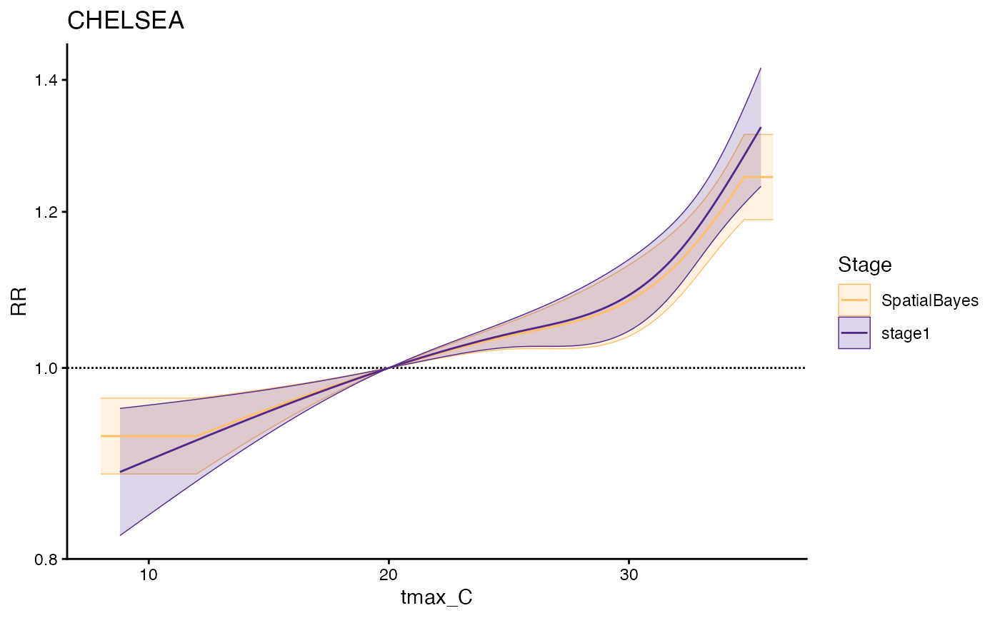

Plot method for condPois_sb
plot.condPois_sb.RdPlot method for condPois_sb
Usage
# S3 method for class 'condPois_sb'
plot(x, geo_unit, xlab = NULL, ylab = NULL, title = NULL, ...)Examples
towns <- c("CHELSEA", "EVERETT", "REVERE", "MALDEN")
exposure_columns <- list("date" = "date", "exposure" = "tmax_C",
"geo_unit" = "TOWN20", "geo_unit_grp" = "COUNTY20")
outcome_columns <- list("date" = "date", "outcome" = "daily_deaths",
"geo_unit" = "TOWN20", "geo_unit_grp" = "COUNTY20")
time_subset <- list(month = 5:9, year = 2012:2013)
exposure_mat <- make_exposure_matrix(subset(ma_exposure, TOWN20 %in% towns),
exposure_columns, time_subset = time_subset)
#> -- NA values automatically removed
#> strata dt_by = 'day', setting strata as geo_unit:yr:mn:dow
outcomes_tbl <- make_outcome_table(subset(ma_deaths, TOWN20 %in% towns),
outcome_columns, time_subset = time_subset)
#> Missing outcome values introduced by xgrid were set to 0;
#> assumes that every time in the dataset should have an outcome value
#> strata dt_by = 'day', setting strata as geo_unit:yr:mn:dow
shp <- subset(ma_towns, TOWN20 %in% towns)
m <- condPois_sb(exposure_mat, outcomes_tbl, shp, global_cen = 20)
#> STAN TYPE = laplace
#> SPATIAL MODEL = bym2
#>
#> crossbasis args for geo_unit CHELSEA :
#>
#> maxlag: 5
#>
#> argvar:
#> List of 2
#> $ fun : chr "ns"
#> $ knots: Named num [1:2] 25.6 32.1
#> ..- attr(*, "names")= chr [1:2] "50%" "90%"
#>
#> arglag:
#> List of 2
#> $ fun : chr "ns"
#> $ knots: num [1:2] 0.878 2.095
#>
#> strata:
#> CHELSEA:yr2012:mn05:dow03
#> strata_min: 0
#>
#> min_n: 1
#>
#> truncate final RR and basis cen: 0
#> formula:
#> daily_deaths ~ cb
#> family: quasipoisson
#> has to be one polygon per row in `shp`
#> ...laplace optimize...
#> Initial log joint probability = -3358.51
#> Iter log prob ||dx|| ||grad|| alpha alpha0 # evals Notes
#> 99 -3356.81 0.0025141 7.47411 1 1 127
#> Iter log prob ||dx|| ||grad|| alpha alpha0 # evals Notes
#> 199 -3356.7 0.00032084 0.336854 0.2162 1 251
#> Iter log prob ||dx|| ||grad|| alpha alpha0 # evals Notes
#> 211 -3356.7 0.000175631 0.220171 0.9493 0.09493 267
#> Optimization terminated normally:
#> Convergence detected: relative gradient magnitude is below tolerance
#> Finished in 0.2 seconds.
#> ...laplace sample...
#> Calculating Hessian
#> Calculating inverse of Cholesky factor
#> Generating draws
#> iteration: 0
#> iteration: 100
#> iteration: 200
#> iteration: 300
#> iteration: 400
#> iteration: 500
#> iteration: 600
#> iteration: 700
#> iteration: 800
#> iteration: 900
#> Finished in 0.4 seconds.
#> ...laplace draws...
plot(m, geo_unit = "CHELSEA")
